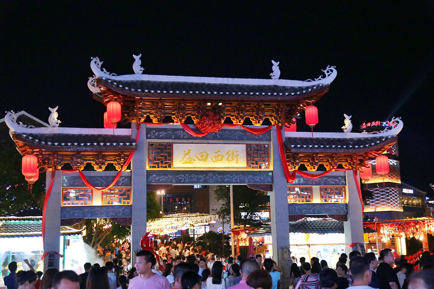
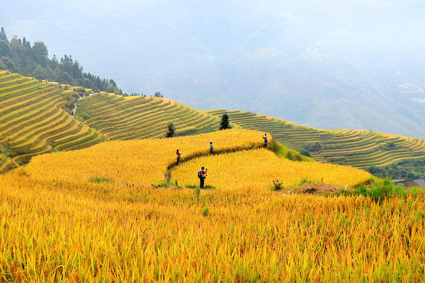

节庆活动
桂林每年举办多种传统节庆活动，这些节庆展示了丰富的民族文化。
阳朔西街灯会
阳朔西街的灯会是每年春节期间的一大亮点，街头灯笼璀璨，民俗演出吸引着成千上万的游客。
桂林国际山水节

桂林国际山水节是一项展示桂林山水景观与文化魅力的国际性节庆活动。活动内容包括山水实景演出、民族歌舞等。
龙脊梯田丰收节
龙脊梯田丰收节是当地的传统节庆，庆祝稻谷丰收。活动中会有丰富的民间表演和特色美食。
桂林每年举办多种传统节庆活动，这些节庆展示了丰富的民族文化。
阳朔西街的灯会是每年春节期间的一大亮点，街头灯笼璀璨，民俗演出吸引着成千上万的游客。
桂林国际山水节是一项展示桂林山水景观与文化魅力的国际性节庆活动。活动内容包括山水实景演出、民族歌舞等。
龙脊梯田丰收节是当地的传统节庆，庆祝稻谷丰收。活动中会有丰富的民间表演和特色美食。